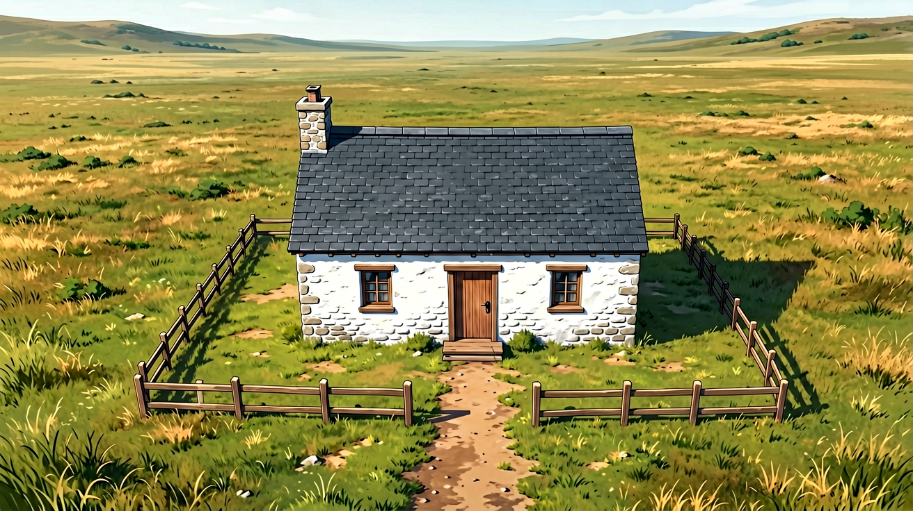
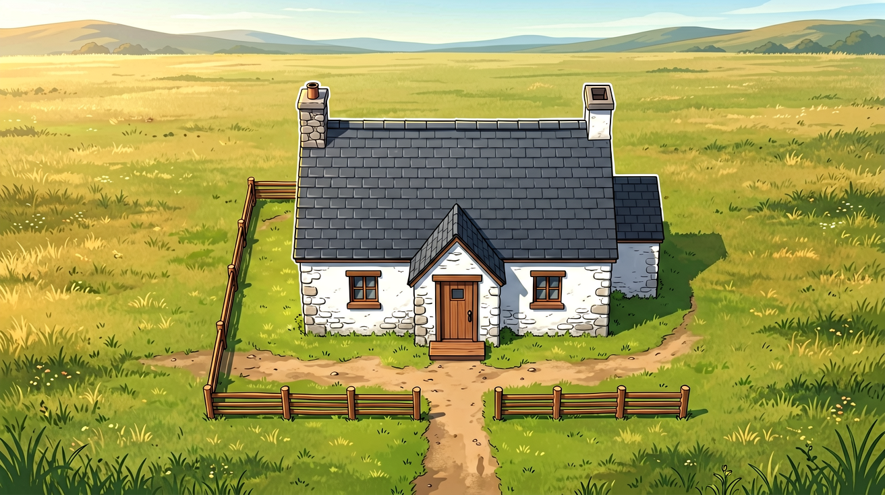
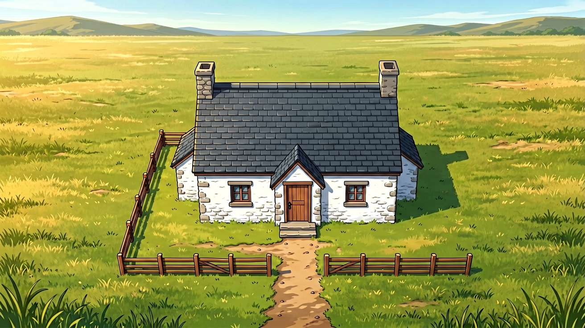
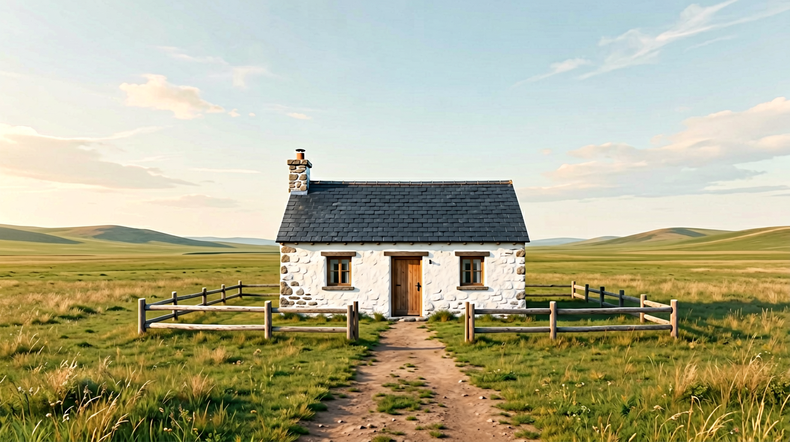
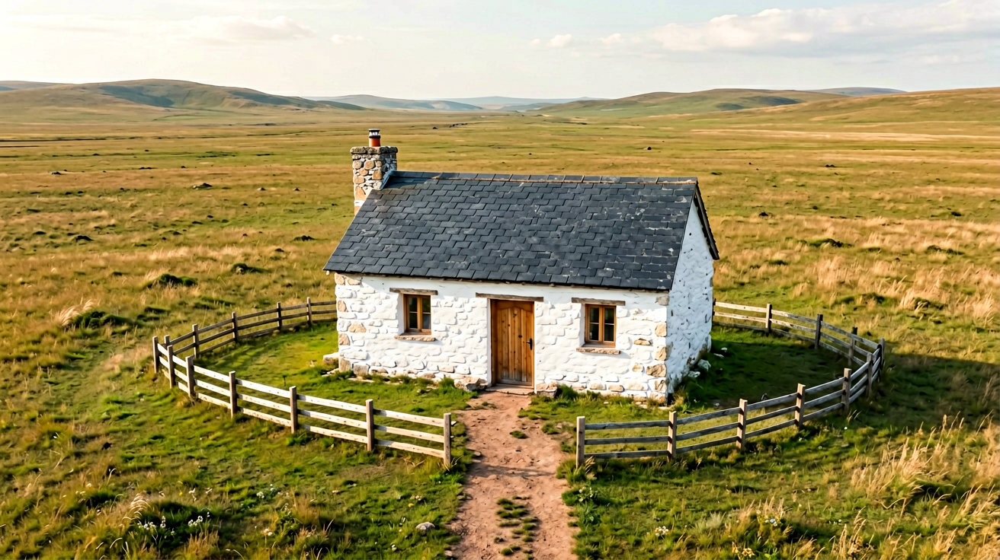

场景模块 · 物品/场景多角度生图 — 俯视图专项迭代报告
项目 AGNES_完整验收_A · Location「草原石屋」loc_60f30c46eebf · 生成模型 agnes-image-2.1-flash · 2026-09-17
✅ 结论：系统链路走通 —— 复用 LocationView 机位 + 确定性 prompt + 六维 vision review 的方法成立；R4 候选已通过审查并批准入库（七维全 pass，含 view_consistency）
迭代总览（R1 → R4）
| 轮次 | 策略 | 视角 | 风格(2D动漫) | 结果 |
|---|
| R1 基线（上一agent） | 通用 Camera 句式（病句），指令在中段 | fail · 45°写实航拍 | fail · 照片 | needs_fix |
| R2 强指令 | overhead 专用句式 + 强 top-down 语言 | concern/fail · 3/4 高角 | pass · 赛璐璐 | needs_fix |
| R3 前移+地图锚 | 指令前移到 prompt 开头 + "2D game map" 锚 | concern/fail · 3/4（风格更游戏化） | pass | needs_fix |
| R4 nadir+1:1 | "nadir/卫星图" 正语义锚 + 画幅 1:1 + 首尾二次强调 | pass · 陡俯视屋顶主导 | pass | pass → 已批准 ✅ |
R1 · 基线（上一 agent 的俯视图）
复用 LocationView（camera_zone=overhead），全部要求塞进 look_direction。模板拼出病句 "looking toward the directly from above..."，航拍先验胜出 → 约 45° 写实无人机斜拍，且风格漂成照片。审查 view_consistency=fail + project_style_consistency=fail。
R2 · overhead 专用强指令句式
location_prompt.py 增加 overhead 分支：专用 "true top-down view / 90-degree vertical / flat orthographic projection / no horizon" 句式，look_direction 拆为独立 notes（消除病句）。同时把项目视觉画像补上负向约束（live-action photography / photorealistic / 3D CGI）→ 风格从此全部转正。视角仍被航拍先验压成 3/4 高角。

needs_fix视角 fail风格 pass
R3 · 指令前移 + 游戏地图锚
俯视指令前移到 prompt 开头（Viewpoint 段紧跟引言），加 "like a 2D game map" 语义锚。结果：游戏立绘风格拉满（更精致的动漫风），但构图反而更正面 —— 训练数据里"游戏建筑插画"多为正面 3/4。教训：锚点同时拉风格和构图，map 词赢风格、输角度。

uncertain视角 concern风格 pass

needs_fix视角 fail风格 pass
R4 · nadir 语义锚 + 1:1 画幅 + 首尾二次强调（最终通过）
换用航空摄影术语 nadir（正下视） + "satellite imagery / architectural floor plan" 正语义锚，正向描述画布（"roof fills the center, ground fills the whole canvas"），prompt 结尾二次强调 "seen straight from above, like a map lying flat on a table"，画幅改 1:1。候选 2 视角达约 60° 陡俯视、屋顶主导构图，七维全 pass，已 approve 入 Resources ReferenceAsset。
参照系 · 同一石屋的其它机位（均有跨视角身份一致性）

远景·南面草原（t2i，风格仍写实）

俯瞰·西南高角（约 45°，R4 之前的航拍水平）
前情 · 火车站台多角度测试（上一 agent 的对比图）
带已批准 anime 参考图做 i2i：①东端→西 ②西侧铁轨→东 ③地面→仰视顶棚 ④北端→南（④为无参考对照，构图真正不同）⑤⑥为同地点不同 SceneState 实例。可见带参考时机位容易被参考图锚定（①②③构图趋同），这正是俯视图选择纯 t2i 路线的原因。
第二轮 · 侧视图与背视图专项（用户最终目标机位）
状态：未走通，判定为模型能力边界。侧视图累计 8 次生成（5 种措辞族 × t2i/i2i 双路线）、背视图 2 次，全部被 vision review 诚实拦截 —— 模型始终绘制正面立面（门+两窗）。期间完成三项系统性修复：① prompt builder 重名 anchor 去重（数据曾有 4 个重名 east_chimney，字面指示模型画多根烟囱）；② hero 建立镜头七维全过并批准（下方图）；③ 烟囱规格去方位化（罗盘声明不可被稳定消费）。
最终结论
① 系统/方法层：走通。机位表达、确定性 prompt、OCC、六维 review、批准入库全链路正常，且两次诚实拦截不合格资产（俯视图双烟囱、侧视图正面泄漏）——审查闸门可信。
② 俯视图：走通（nadir 锚 + 1:1 + 首尾强调，约 60° 陡俯视过审）。
③ 侧/背视图：模型能力边界。agnes-image-2.1-flash 对建筑物类目标的"标准视角"（正面）先验极强，prompt 措辞、语义锚（elevation/rear/nadir）、i2i 参考均无法把相机绕到侧面/背面；纯 t2i 与带参考 i2i 同败，且负面句式完全无效。与学界共识一致：扩散模型仅靠 prompt 无法可靠控制相机方位角，需 CustomDiffusion360 类视角微调或 ControlNet-Depth 类结构条件。
④ 可行替代路线：a) 升级图像模型到指令编辑型（Gemini-2.5-flash-image / Nano Banana 级：输入 hero 图 + "same cottage seen from behind" 是其强项）；b) 用图生视频绕过——hero 起镜 + 镜头环绕 prompt（视频模型对相机运动理解远好于 t2i）；c) 对高频场景训练视角 LoRA / ControlNet-Depth 条件。
第三轮 · A/B 对照实验（隔离模型变量）
用 语义完全相同的墙主体化措辞 在另一个生图模型上做对照：同一提示词家族、同样纯 t2i 路线、同一目标机位。
A/B 实验最终结论
① 控制变量：同措辞族 / 同纯 t2i / 同目标 → 对照模型侧、背各一次成功；Agnes 6 种措辞族 × 双路线 × 10+ 次全部失败。
② 判定：agnes-image-2.1-flash 对建筑类目标无法执行离面（side/rear）相机指令，属模型能力边界——用户的假设被实验证实。
③ 同时证明措辞策略普适重要：以建筑整体为主体的措辞（"rear elevation of the cottage"）在强模型上也会翻车；"墙作画面主体 + elevation drawing 锚 + 否定后置"的措辞模板是可复用资产（已沉淀在本文档与代码注释）。
④ 工程落地路径不变：换指令编辑型图像模型（系统仅改 config 一行）或图生视频环绕取帧；本系统的 LocationView 机位表达、审查链、措辞模板全部可平移。
第四轮 · SenseNova U1.5-lite 对照测试 —— 4/4 全过 ✅
商汤 sensenova-u1.5-lite，同一只小石屋、同一套措辞族直接测试：侧视图✅（墙主体化）、背视图✅（两小窗无门）、侧视图✅（旧措辞——两个模型都翻车的那版！）、俯视图✅（真 90° 正俯视，一发入魂，Agnes 四轮最好成绩仅约 60°）。多角度生图能力全面碾压，是更适合本场景模块的模型。
SenseNova 计分板与接入建议
| 机位 | Agnes 2.1 flash | 对照生图模型 | SenseNova U1.5-lite |
|---|
| 正俯视（nadir） | ❌ 约60°（4轮迭代后） | 未测 | ✅ 真90° · 1次 |
| 侧视图（获胜措辞） | ❌ 8次全正面 | ✅ 1次 | ✅ 1次 |
| 侧视图（旧措辞） | ❌ | 未测 | ✅ 1次 |
| 背视图 | ❌ 2次全正面 | ✅ 1次（墙主体化）/ ❌ 1次（旧措辞） | ✅ 1次 |
接入路径：系统已有 SenseNova 文本通道（config text_provider），补一个同 base_url 的 images/generations 客户端（b64_json 直存，无需公网 URL/代理），scene_system 侧仅需把 provider 的生图调用指向它。措辞模板（墙主体化 + elevation 锚 + nadir）已沉淀可直接复用。注：商汤出图偏精细插画风，动漫赛璐璐感需在 visual_profile 措辞上再调。
结论与下一步
① 方法判定：走得通。架构层（LocationView 机位表达 + 确定性 prompt + OCC + review 拦截 + 批准入库）全程按设计工作，无需换思路；prompt 层经 4 轮迭代也拿到了 review pass。
② 关键经验：风格靠「项目画像负向约束」稳住；正俯视角度靠 nadir/卫星/平面图正语义锚 + 1:1 画幅 + 首尾重复，否定句（no horizon）几乎无效，"game map" 类锚点会拉偏构图。
③ 残留差距：批准图约 60° 陡俯视，非严格 90° 正交（审查口径已接受）；且屋顶出现双烟囱（spec 为单东烟囱，审查未拦）。若后续需要严格平面图级 90°，建议走 S1 §H 预设路线：SetLayout canonical 结构 → 渲染 top-down 示意图（图是投影，结构是真相）。
④ 复用产物：location_prompt.py 的 overhead 分支已合入（非 overhead 路径逐字节不变，存量 basis 不受影响），后续任何 Location 的俯视机位直接受益。